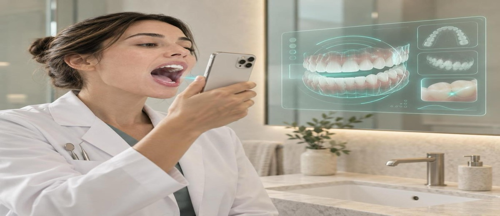

La IA ya examina la boca de tu paciente antes de que llame a tu clínica

Tu paciente no ha pedido cita. Ni siquiera ha cogido el teléfono.
Pero ya sabe que tiene algo en la boca.
Lo ha visto en la pantalla de su móvil, mientras se lavaba los dientes. Una foto. Un minuto. Un resultado.
Se llama Oris Dental Scan. Lo ha desarrollado una clínica del País Vasco con financiación del Gobierno Vasco (SPRI), entrenado con 3.000 imágenes clínicas reales validadas por odontólogos. Detecta señales, pone nombres, siembra preguntas.
Y muchos responsables de clínica aún no saben que existe.
Esto cambia cómo entra el paciente
Antes llegaba con dolor. O llegaba porque alguien le convencía. En ambos casos venía en blanco: sin jerga dental, sin idea de lo que podía tener, sin expectativas concretas.
Ahora puede llegar con una pantalla que dice "posible acumulación de sarro en la zona 34" o "coloración que podría indicar caries en proceso".
No es un diagnóstico clínico. No sustituye al profesional. Pero hace algo que el dolor no hace: despierta la curiosidad antes de que duela. Y activa al paciente que habría seguido esperando.
La barrera no era el precio. Era que el paciente no tenía un motivo concreto para actuar.
Qué hace mal la clínica que ignora este cambio
La clínica que no tiene en cuenta que el paciente puede llegar "preinformado" va a notar dos cosas:
- Pacientes que hacen preguntas más técnicas desde el primer minuto. Si el personal no las espera, la consulta empieza mal. El paciente siente que sabe más que quien le recibe, y eso rompe la confianza antes de empezar.
- Leads que se pierden sin saber por qué. Quien sabe usar estas herramientas de captación antes que tú —y ayuda al paciente a interpretar lo que ha visto— gana la cita que de otra forma no habría llegado a nadie.
La primera visita empieza antes de que llamen
El momento en que el paciente decide si tú eres la clínica a la que quiere ir empieza mucho antes del sillón. Antes de la recepción. Antes de la web. Antes de las reseñas.
Ahora puede empezar en el cuarto de baño, con el móvil apuntando hacia dentro.
El paciente que ya ha visto algo raro en su boca quiere saber qué hacer con eso. Si tu clínica está en ese momento —con información clara, con un protocolo de primera visita bien explicado, con alguien que responde rápido cuando escribe— capta esa cita.
Si no, la capta quien esté.
En Método EBA lo llamamos gestión del punto de entrada: el conjunto de señales que recibe el paciente antes de poner un pie en la clínica. Es donde se juega más del 60% de la decisión de venir o no venir.
Qué puedes hacer ahora (sin comprar ningún software)
No necesitas implementar nada propio para aprovechar este cambio:
- Prepara a tu recepción para el paciente que ya viene con ideas. "Vi en una app que tengo caries" no es una queja: es un paciente a medio convencer. La respuesta correcta no es desmontar la app, sino confirmar la visita y tranquilizarle.
- Comunica que haces diagnóstico de primera visita sin compromiso. El paciente que tiene dudas sobre lo que ha visto necesita una puerta de entrada sin presión. Ofrecerla en tu web y en tu ficha de Google es captación real y diferenciada.
- Actualiza tu ficha de Google con qué resuelves en la primera cita. El paciente que busca "revisión dental" o "posible caries" después de usar una app de IA es un lead caliente. Si tu ficha no les habla, pasan a la siguiente clínica.
El dato que lo explica todo
En España, 1 de cada 3 adultos acude al dentista solo cuando le duele algo. Eso significa que 2 de cada 3 pacientes con problemas reales en la boca no tienen todavía un motivo urgente para moverse.
La IA de evaluación por móvil convierte la curiosidad en urgencia. No del dolor, sino del conocimiento: "ahora sé que tengo algo, y quiero que alguien me lo confirme".
Es una bolsa enorme de demanda latente que antes necesitaba un problema visible para activarse. Ahora solo necesita una buena foto.
La IA no viene a quitarte trabajo.
Viene a enviarte pacientes que antes no sabían que tenían una razón para llamarte.
Lo que hagas cuando lleguen ya depende de ti.